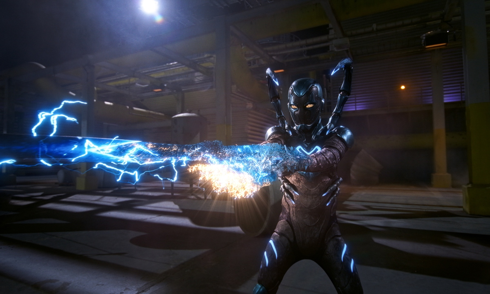
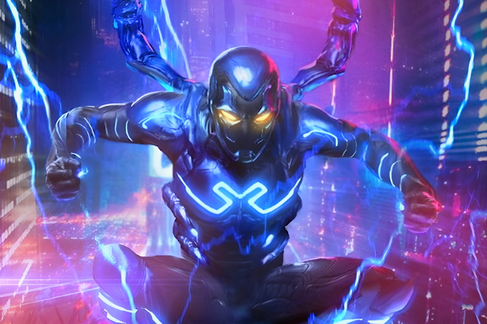

Nesse sentido, ele ganha super-força, super-agilidade e capacidade de voo. A armadura também o protege da maioria das armas dos inimigos. Com o traje, Jaime pode sobreviver a condições extremas, ao espaço e a outros ambientes inabitáveis. Suas comunicações tambem são aprimoradas, o que permite que ele sirva como um tradutor universal e um controlador de quase todas as tecnologias.
Além disso, ele pode absorver quase qualquer forma de energia e direcioná-la em explosões, construções sólidas e escudos impenetráveis. A habilidade mais icônica da armadura do Besouro Azul é a mudança de forma. Com um pensamento, o equipamento de Jaime pode formar espadas, escudos, garras, ganchos, canhões de energia e muito mais. Não há limite para o que ele pode criar com o escaravelho.
Jaime ainda pode formar asas e motores a jato para voar, vibrar rápido o suficiente para passar por objetos sólidos ou se teletransportar deslizando entre os universos. É uma das maiores ameaças físicas da franquia, mas também é um estrategista capaz. Além de todas as opções de armas e mobilidade, o escaravelho é um solucionador de problemas para todos os fins.
Isso porque ele pode se adaptar para lutar contra qualquer inimigo. A poderosa arma escaneia automaticamente todos que Jaime encontra, fornecendo mais informações sobre o que fazer. Além disso, o escaravelho pode se comunicar telepaticamente com Jaime, e dar ao personagem a capacidade de identificar os poderes sobre-humanos de uma pessoa e as fraquezas únicas de relance.
Em resumo: ele tem todas as medidas e poderes necessários para lutar contra qualquer ser. Nos quadrinhos, o traje combateu metahumanos mais poderosos como Flash, Lanterna Verde e até Superman. O Besouro Azul é (ainda) um guerreiro extremamente capaz, e tem tudo o que precisa para derrotar quase qualquer inimigo
Existem algumas imperfeições na armadura do Besouro Azul. A mais notável é que ela é feita de tecnologia Reach. Ou seja: qualquer outra arma feita por esta poderosa raça de conquistadores pode perfurar a armadura e colocar em risco a vida de Jaime. Tem também o Khaji Da, um supercomputador ligado ao traje programado para evitar qualquer dano natural.
Além disso, o escaravelho é uma arma tecnológica, mas tem pouco conhecimento de magia. No HQs, quando Jaime é confrontado por um feiticeiro, Khaji Da entra em pânico e não responde. Este problema não é consistente, já que a armadura fabricou contingências anti-magia no passado. Em alguns casos, um ímã poderoso pode atrapalhar a função de escaneamento do escaravelho. Isso deixaria Jaime sem o conhecimento necessário para vencer a maioria das lutas.
O escaravelho também tem uma estranha relação com os Lanternas Verdes. Originalmente desobedecia ordens e forçava Jaime a recuar sempre que via John Stewart ou Guy Gardner, mas em certo momento tenta matá-los. Como o anel dos Lanternas Verdes, o escaravelho depende parcialmente da imaginação. Se o traje não consegue resolver o problema, cabe a Jaime descobrir. A armadura pode fazer tudo o que ele pedir, mas deve ter criatividade também.
A produção segue o jovem mexicano Jaime Reyes (Xolo Maridueña) que, recém-formado, volta para casa cheio de aspirações para o futuro. Enquanto tenta encontrar seu propósito no mundo, o destino intervém e faz chegar às mãos de Jaime uma antiga relíquia da biotecnologia alienígena o Escaravelho.
O besouro alienígena azul escolhe Jaime para ser seu hospedeiro simbiótico, o que lhe dá uma armadura super poderosa e lhe garante poderes. O jovem então enfrentará desafios imprevisíveis, mudando para sempre seus planos ao se tornar o Super-Herói Besouro Azul.
“Besouro Azul” tem direção de Angel Manuel Soto (“Charm City Kings”), a partir do roteiro do escritor mexicano Gareth Dunnet-Alcocer (“Miss Bala”), baseado em personagens da DC. John Rickard e Zev Foreman estão produzindo, com Walter Hamada, Galen Vaisman e Garrett Grant atuando como produtores executivos. Relembre o trailer: